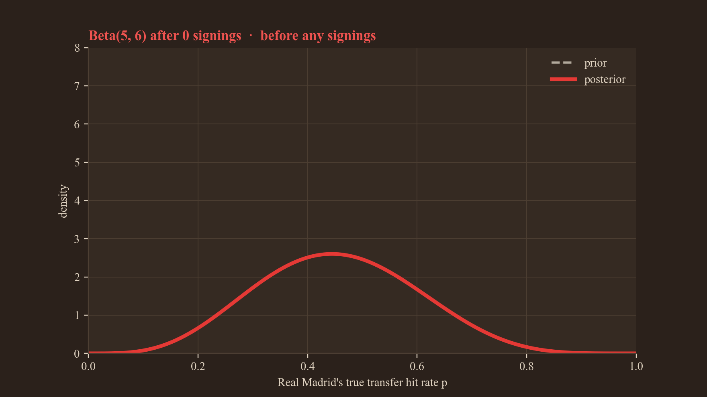
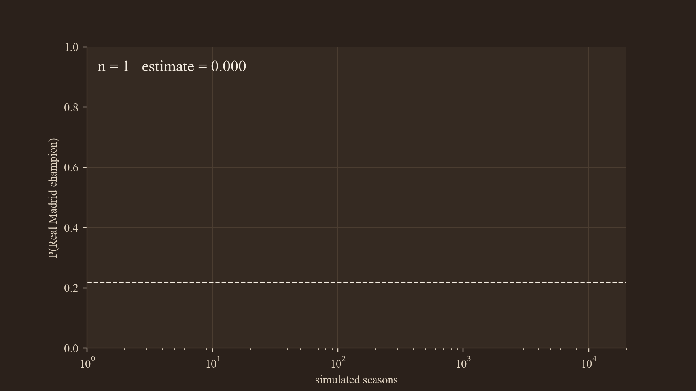

Final Project/MATH 221 Applied Probability
Squad value, transfers and results in La Liga, 2014/15 to 2025/26
Stadium photo: Badefa, CC0, via Wikimedia Commons
Kick-off
The number of goals in 90 minutes is Poisson with rate λ.
↓ 1 more view
Kick-off · ↓ 1/1
Why this question
Game plan
European Cups in the Bernabéu trophy room. Photo: Daniel from Calgary, CC BY 2.0, Wikimedia Commons
First half
Does spending more get you more points? And do the expensive signings actually work out?
Part 1/regression
Points rise by β₁ for each one-unit rise in log squad value.
↓ 2 more views
Part 1 · regression · ↓ 1/2
Part 1 · regression · ↓ 2/2
Part 1/residuals
Residual = the points they got minus the points the line predicted.
↓ 1 more view
Part 1 · residuals · ↓ 1/1
Part 2/Bayes
Start from the prior, then add the hits and the misses.
↓ 2 more views
Part 2 · Bayes · ↓ 1/2
Part 2 · Bayes · ↓ 2/2
Part 2/learning
Prior hits plus real hits, over prior total plus signings.
↓ 2 more views
Part 2 · learning · ↓ 1/2
Part 2 · learning · ↓ 2/2

Part 2/logistic regression
The log-odds of becoming a regular, built from age, age squared and log fee.
Alfredo Di Stéfano and José Santamaría, 1962. Photo: Joop van Bilsen / Anefo, Nationaal Archief, CC0
Second half
Who's genuinely good, when do players peak, and how much is one star worth?
Part 3/Gamma-Poisson
Add his goals + assists to α and his minutes (in 90s) to β.
↓ 3 more views
Part 3 · Gamma-Poisson · ↓ 1/3
Part 3 · Gamma-Poisson · ↓ 2/3
Part 3 · Gamma-Poisson · ↓ 3/3
Part 3/the squad
Part 4/quadratic regression
The top of the parabola.
↓ 1 more view
Part 4 · quadratic regression · ↓ 1/1
Part 5/Poisson
Two independent Poissons, so we multiply the two chances.
↓ 3 more views
Part 5 · Poisson · ↓ 1/3
Part 5 · Poisson · ↓ 2/3
Part 5 · Poisson · ↓ 3/3
Part 5/what-if
Remove his share s of the goals, give back r of it for whoever replaces him.
↓ 1 more view
Part 5 · what-if · ↓ 1/1
Part 5/Monte Carlo
The 95% margin of error for a probability we got by simulation.
↓ 3 more views
Part 5 · Monte Carlo · ↓ 1/3
Part 5 · Monte Carlo · ↓ 2/3
Part 5 · Monte Carlo · ↓ 3/3

Sergio Ramos with the Champions League trophy, Puerta del Sol, May 2016. Photo: Cristina Cifuentes, CC BY 2.0
Extra time
Do they really score more late in games, or is that just luck? And do our answers hold up?
Part 6/permutation test
The share of shuffles with a gap at least as big as the real one.
↓ 1 more view
Part 6 · permutation test · ↓ 1/1
Part 7/robustness
Always move to a better spot; move to a worse one with probability r.
↓ 3 more views
Part 7 · robustness · ↓ 1/3
Part 7 · robustness · ↓ 2/3
Part 7 · robustness · ↓ 3/3
Live
Full time
La Décima celebrations, Madrid, May 2014. Photo: Presidencia de la Comunidad de Madrid, CC BY 3.0
Thanks for listening
Every chart in this deck is live. Ask about any of them and we'll pull it up.
Stadium photo: Badefa, CC0, via Wikimedia Commons
Backup